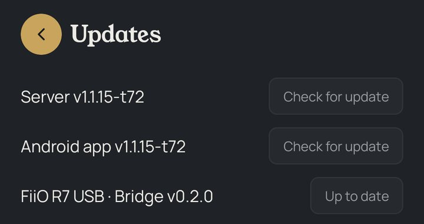

Mandarin Bridge
Mandarin's own player for a USB DAC: a device with the DAC on its USB port becomes a room Mandarin plays to, bit-perfect. On Android, on Linux, and as a Raspberry Pi image.
Mandarin Bridge for Android
Made for a FiiO R7 feeding a small DAC over USB. Mandarin's own USB driver claims the DAC from Android and feeds it at each track's own rate and depth, DSD natively or as DoP: no mixer, no resampling. It keeps the device awake while it plays.
Mandarin Bridge for Linux
A 64-bit Debian, Ubuntu or Raspberry Pi OS computer beside the DAC, playing with Mandarin's own audio engine.
One line installs it; it starts at boot. Its page is at http://<the computer>:49494/.
The Raspberry Pi image
Raspberry Pi OS Lite (64-bit) with the Bridge in it, for a Pi 3, 4, 5 or Zero 2 W: flash it, plug in the DAC, power on.
Updated: over SlimProto, Mandarin now sends Mandarin Bridge a continuous stream of PCM (DSD still goes as DSD).
It finds Mandarin on the network by itself (SlimProto, port 3483; a Linux one can be pointed at it with
--server), and Mandarin reads the DAC whole from it (every rate, depth and DSD multiple, nothing to
tick); Now playing's signal path says what it feeds the DAC, in its own words. On
Mandarin OS, choose it as Mandarin OS installs, or Install it from the system
page's Settings tab.
A Bridge that was a UPnP renderer before v0.3.0 keeps the name and settings Mandarin had for it; one whose app is installed again is the device it was.
Set up on Android (a FiiO R7)
- Install Mandarin Bridge from Downloads. Installing needs Install unknown apps allowed for the browser or file manager you open it with.
- Open Mandarin Bridge once. It starts, finds Mandarin on the network, and keeps running.
- Plug the DAC into the USB port. Android asks once whether the app may use it; tick always.
- Optional, under Keep awake: turn off battery optimisation, and keep it starting when the device starts.
- In Mandarin, Settings → Audio Devices: the Bridge is listed by its name; switch it on. There is nothing to tick: the rates, depths and DSD come from the DAC itself. Pick it as the speaker and play.
Volume. A DAC with a volume control of its own is driven by Mandarin's slider. A DAC without one — a line-out DAC into an amplifier — is on Fixed volume: full level, bit-perfect, the amplifier's knob for the volume.
Set up on Linux
As root, on the computer the DAC is plugged into:
curl -fsSL https://github.com/meltface-80/Mandarin/releases/download/mandarin-bridge-v0.3.10/install.sh | sudo sh
It installs the Bridge and the audio engine, ffmpeg where it isn't there, and a service that starts it at boot.
Then switch it on in Mandarin's Settings → Audio Devices. Its page,
http://<the computer>:49494/, shows the DAC it plays to (and a choice where more than one is
plugged in), what plays and how the DAC is fed, its name on the network, and how DSD goes. On the computer
Mandarin runs on, it is how a USB DAC there is played: the server opens no sound device of its own on Linux. On
Mandarin OS, choose Mandarin Bridge as it installs, or Install it from the
system page's Settings tab.
Native DSD, and the kernel. On Linux, native DSD is the kernel's to offer: its USB audio driver lists a DAC's native DSD only where its own list knows the DAC's maker, and any other DAC is given DSD as DoP, even where it takes DSD natively (as Mandarin Bridge for Android plays it). The Bridge reads the DAC's own USB descriptor, and where it says native DSD and the kernel offers none, its page and its log give the one line that has the kernel offer it, for that DAC alone, such as:
echo "options snd-usb-audio vid=0x2622 pid=0x0041 quirk_flags=0x8000" | sudo tee /etc/modprobe.d/mandarin-dsd.conf
(with your DAC's own vid and pid, as the page gives them); then unplug the DAC and plug it
in again, or restart. To undo it, delete the file and replug.
Set up on a Raspberry Pi
- Download the image from Downloads.
- Flash it with Raspberry Pi Imager: Choose OS → Use custom. Set your Wi-Fi there if you like.
- Plug the DAC into the Pi's USB port and power it on.
- Its page is at http://mandarin-bridge.local:49494/. With no network set, the Pi opens its own Wi-Fi,
Mandarin Bridge Setup (password
mandarin-setup): join it from a phone, open http://10.42.0.1:49494/, choose your home network and give its password. - In Mandarin, Settings → Audio Devices: switch the Bridge on. It plays like any room.
Updated from Mandarin
Every Bridge Mandarin knows has a row of its own on Settings → Updates, its name and version, and its own Check for update, as the server's and the app's: it looks for a newer build now and becomes Update available when there is one. A tap asks the Bridge to update: on Linux and the Pi it fetches the build from GitHub, checks it against the checksum published with it, and puts it in place.
- Linux and the Raspberry Pi: in a few seconds, by itself. One that fails as it starts is let go, and the one installed runs on.
- Android: a notification on the device; its tap downloads the update in the browser, and Android's installer asks you to install it. The Bridge holds no permission to install apps itself.
- An Android Bridge from before v0.2.1, or a Linux or Raspberry Pi Bridge from before v0.3.1, needs one last update by hand, from Downloads.

Its log, in Mandarin's
Every Bridge keeps its own log, always, and the server gathers each one's new lines every five minutes into its own Logs, through the same privacy filter. Download all logs (Settings → Setup → Logs, in a browser) has them with every other log, in time order, and the Android app's Save log (Settings → Setup → Logging) has every Bridge's log after the server's, each under its name. See Logs.
Proving it bit-perfect
On an Android Bridge, SQ-tool records exactly what its USB driver feeds the DAC and compares it with the file, sample by sample. Mandarin Bridge for Linux and the Raspberry Pi can't be recorded yet.